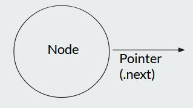
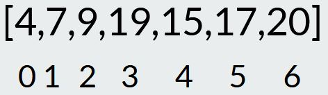
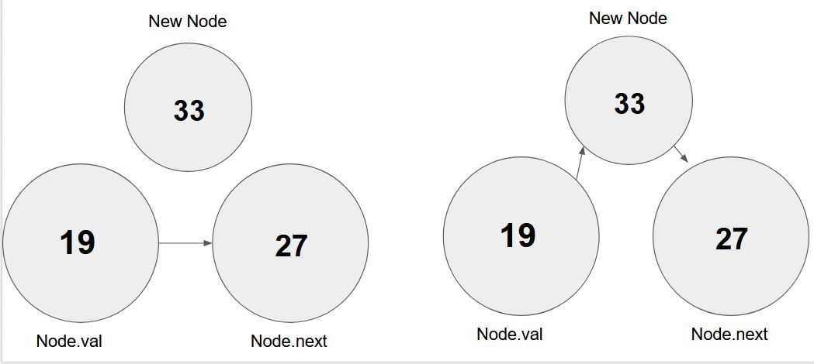

Single Linked Lists
Understanding common data structures is essential for any programmer. Not only are they commonly used to test a programmer's knowledge during interviews or coding challenges, but having these tools in your "developer's toolkit" will prove useful in your own personal development. Let's begin by taking a look at one of the most common data structures, Singly Linked Lists.
Overview
Singly Linked Lists are a fantastic starting point as they share fundamental concepts with other structures. The structure is comprised of nodes. A node is simply an object that we will construct. In this example, we will be using JavaScript.
- Linked lists are common and appear early on in undergraduate Computer Science works.
- Not very practical in real world applications, Linked Lists make for a good foundation to base data structures off
- They're simple, but they can get complex and finnicky, so it's important to master them.
- Lists, Stacks and Queues can all be applied as a Singly Linked List.
- Very, very common in software engineering interviews.
- Linked List data structure represents a linear sequence of vertices. We're going to call them nodes.
- The list itself has two properties: head - First Node on the list. Length - how many elements exist
- Linked Lists do not need to live in the SLL instance. Each vertex is an instance of a Node
- Nodes themselves track the value they contain, and the location in memory the next node that they are
'linked'
with live.

- The first node on the list is called the head. Each list has to start with a head.
- Arrays and Singly Linked Lists are both implementation of the same abstract data type. The important
difference is how
the data is stored.
- Unlike Arrays, Linked Lists have no indices, and no random access. Since we don't have Random Access, we do not have the ability to look up an individual Node. Instead to find one, we have to traverse through the list one node at a time, checking each .next to see if it's the one we want.
- Arrays contain contiguous data

- In the memory of the computer, the array has to be stored as a whole, and when you get into thousands or millions of records, that can tie up machine resources.
- Linked Lists are non contiguous. They REPRESENT data that is linear, but when it comes to computer memory, each node is can be anywhere. It's a representation of what an array portrays, without resources.
- The only reason we know what the next element is, is because of our next property on that specific Node

- Because Linked Lists are not contiguous, that gives us an advantage over arrays. In an array, we need to shift every element if we want to insert of delete an index. With linked lists, all you do is move the pointers.